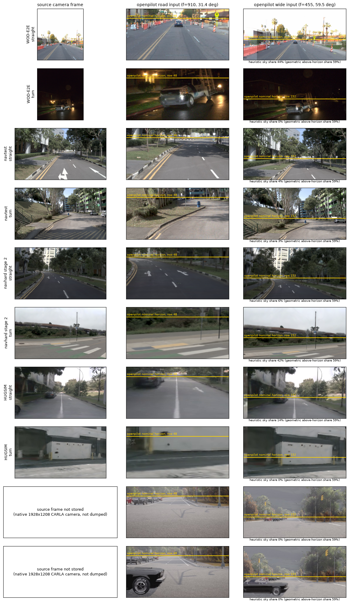
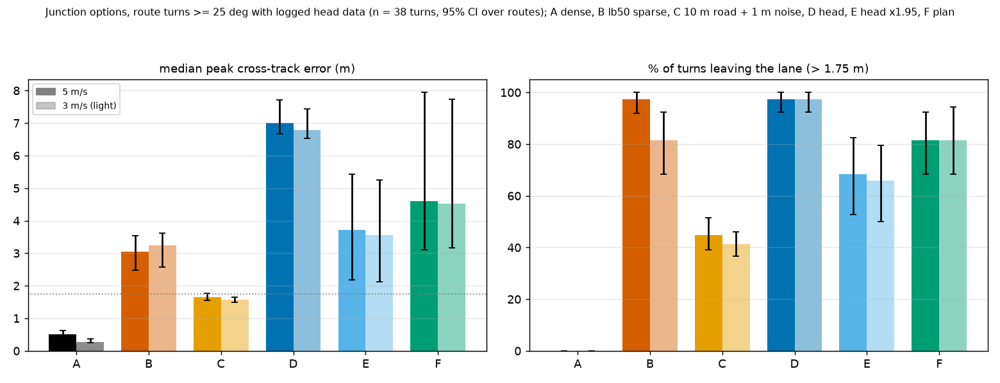

op-path = action 曲率 + 限幅 + 延迟）后，HUGSIM 打转由 10/64 降为 0/64（决策 118、124）。spec_plan_smooth / op-path，基准统一为 P2H（输入对齐 + 可行驶区 SDF hinge），navtest 达 88.67 分（距 WA-JEPA 仅差 3.04 分），HUGSIM 全量 HD 达 43.2（直道 P2+hinge 达 47.8 领先 WA-JEPA 2.2 分，决策 149、153）。
spec_plan_smooth 窗口曲率平滑方案与 64 场景闭环验证（决策 149、150）。为避免概念混淆，跨榜评测中涉及的模型、执行器、预设与训练目标统一规范如下：
action[0] 期望曲率、action[1] 期望加速度）。实车真正执行的是 action，而非 plan（决策 118、130）。curv：直接下发 action[0] 期望曲率；op-path：在 curv 基础上叠加车端 clip_curvature（曲率/横向加速度/jerk限幅）与 0.2 s 延迟，为车端标准横向路径。P7：使用 Pure Pursuit 跟踪 plan 位置坐标；hyb：低速走 curv、高速走 P7。两者在闭环中均被证实极易受低速 plan 振荡影响而在起步 20 秒内失控，已被彻底废弃（决策 133）。iLQR / LQR：HUGSIM 官方闭环控制器与 NAVSIM 官方评分器中的轨迹跟踪控制器。spec：统一接口下的标准配置，严格对齐实车物理与模型契约（相机高度 1.86 m，横向走 op-path，偏离逐项显式声明）。exam：2026-10-05 前 HUGSIM 旧评测预设（iLQR 强制跟踪 plan 轨迹位置）。drive：Bench2Drive 旧评测预设（裸 curv 控制，1.433 m 旧相机高度）。LB（榜单自带信息，实车无对应或不同形）；semi（榜单信息 + 人工规则/后处理兜底）；priv（真值状态/地图信息，仅用于诊断天花板分析）。openpilot 在学术界与自动驾驶竞赛中具有极其特殊的地位：
下表汇集 openpilot Cinque 在五大基准上的完整接入与接口契约：
| 接口配置项 | NAVSIM navtest | navhard 两阶段 | WOD-E2E | HUGSIM 64 | Bench2Drive (B2D) |
|---|---|---|---|---|---|
| 基线模型版本 | shipped；P2 / P2H (d148)；N3 打分头 (d72) | shipped；P2 / P2H (d148)；N4 打分头 (d75) | shipped (RFS 8.005)；P2H (7.708，d155) | shipped；P2 / P2H (d148)；dg1 DAgger (d132) | shipped；rc-* 路线微调 (d128)；Qwen3-VL 仲裁 (d86) |
| 实际输出消费 | plan 位置（action 未用） | plan 位置（action 未用） | plan 位置 | spec：横向 action[0]，纵向 plan 速度；exam：plan 位置 | spec：横向 action[0]，纵向 plan 速度 + lead 头 |
| 横向执行器 | 官方评分器 LQR + 单车模型（产生滞后） | 同左 | 开环（无执行器） | spec：op-path（延时 0.25 s 仿真步）；exam：官方 iLQR (d124) | spec：op-path → CARLA 转向 (d133)；废弃 P7/hyb |
| 纵向调度 / 起步 | 评分器回放 plan 速度；retime 重定时 | 同左 | 原生 plan 速度；测试提交 ×1.06 标量 (d107) | 初速 1.0 m/s + 5 s 静止预热 + 1.25x dilate；action 纵向起步失败 (d119) | 自研纵向调度器（设定速度、IDM、plan_vmin 1.0、停车锁存、timer放行、低速滑行） |
| 相机视角 / 安装 | CAM_F0 ~1.87 m，road 与 wide 均从中裁剪 (d104) | 同左（阶段 2 为 3DGS 渲染） | 前视相机 ~1.86 m，wide 采用三相机拼接 (d108) | 6 相机高度 1.2–1.8 m 混合，前视三摄拼 wide | spec (x 1.59, z 1.86) 与开环榜对齐 (d127)；1.22 m / 1.433 m 为旧预设 |
| 历史帧输入 | 2 Hz 关键帧 → GIMM-VFI 插至 10 Hz (d116) | 同左；合成历史含转向致反向 yaw 外推 (d88) | 真实 10 Hz 视频，每帧喂入两次，10 s 预热 | 4 Hz 仿真渲染，dilate 为 5 Hz 喂入 | CARLA 真实 20 Hz 连续视频帧 |
| 路线导航指令 | headline 评测无指令；desire 提前 1 s +0.72 (d66) | 无指令；desire 臂 −0.28 (d66) | 无指令；意图仅进 L 适配器 (d78) | 仿真环境 command 映射至 desire (d90；证实无用) | desire 证实非导航信号 (d121)；zones 半特权兜底；rc-* 路线折线 (d128) |
| 打分轨迹来源 | plan + lever 杠杆臂 + retime (d37, d107) | 同左 | 原生 plan（后轴中心） | 仿真器闭环执行回放轨迹 (HD-Score) | CARLA 闭环驾驶评测 (Driving Score) |
| 声明偏离 (DECLARED) | LB：单图裁 wide、GIMM 合成历史、LQR 执行；semi：lever、retime | 同左（阶段 2 增加 3DGS 视角合成） | LB：三摄拼 wide、帧重复、开环评测；semi：×1.06 标量 | LB：渲染画面、dilate、5 s 静止预热；semi：初速与后处理 | LB：spec 相机标定；semi：纵向调度器、zones 几何；priv：vmerge2 诊断、nored 特权放行 (d81, d126) |
calibrationd 在线学习相机姿态欧拉角（rpy），用以吸收装配偏差；但在 CARLA 仿真中，车辆传感器具有确切的真值外参。源码审计（对照 commaai/openpilot master calibrationd.py、modeld.py 与 transformations/camera.py）表明：
rpyCalib（因 CARLA 相机水平放置，直接喂入收敛标定值 rpy = np.zeros(3)，与模型训练契约严格一致）。wideFromDeviceEuler、height（初始值 1.22 m）与 calStatus 均不参与图像 warp，也不进入任何模型输入特征。spec 标定（x 1.59 m, z 1.86 m）直接对齐开环基准视角。
针对 openpilot 在闭环与困难评测集上的异常，系统性排查排除了以下 6 大直觉怀疑：
| 排查对象 | 最初怀疑 | 实验结论 | 排除证据与决策 |
|---|---|---|---|
| 相机安装高度 / 尺度 | 仿真相机偏高致使模型误判距离与速度尺度 | 排除：模型确实把世界尺度读成约 0.7，但在 WOD-E2E 和真车上完全相同；人工降高至 1.22 m 反而恶化 NAVSIM（−1.97）与 WOD（−0.49 RFS） | 决策 104、108、127；B2D 1.22 m 下走对 5/10（choice）与 3/9（forced），但 90% choice 转弯出车道，实为甩出出口而非真正受控 |
| 地平线与广角视场 | 图像裁剪导致路口盲区无法观察转弯出口 | 排除：五大基准地平线行均在 151.8 附近；加宽 wide 视场（90°/116°）在真实急弯上 action 曲率增量 ≤ 0，改动 road 焦距破坏透视尺度 | 决策 104.10、108、135；冻结 wide 画面时转向 action 仅变 −0.035，表明转向决策主要源自 road 相机 |
| 仿真图像渲染风格 | CARLA / 3DGS 风格迁移导致特征崩溃 | 排除：逐帧图像重建误差极小；起步增益异常（+43%）仅在 nuScenes 出现，WOD/HUGSIM/CARLA 均不复现渲染域差异 | 决策 109；图像差异无法解释闭环发散 |
| 历史帧补帧质量 | 2 Hz GIMM 插帧带来运动模糊与时间抖动 | 排除：真实 10 Hz 视频对比 GIMM 插帧，模型 RFS 仅高出 +0.51 [−0.51, +1.54]，统计不显著 | 决策 116；GIMM 已收回 NAVSIM hold→real 差距的 98%（WOD 上收回 89%，决策 37） |
| 评测场景类型特征 | 打转发生于特定的复杂十字路口或障碍场景 | 排除：打转与否仅取决于车辆静止起步瞬间 plan 的随机微小偏角；对 36 个场景元特征进行回归，均无统计区分度 | 决策 110；发散源于状态反馈闭环，而非外部场景 |
| 控制器增益差异 | 真车执行器等效增益 c 极小，吸收了震荡 | 排除：comma1M 真车结合驾驶员的等效 c 并不小；openpilot 自身曲率限幅与横向加速度上限同样宽松 | 决策 113、115；均匀低通滤波在 B2D 上反而导致 DS 下降 4.1 分 |
openpilot Cinque 在 navhard 综合得分仅 33.54 分（阶段 1 为 71.79，阶段 2 为 47.08），较公开榜前列（EABOT 58.6 榜首，对比 DriveZero 56.8、ZTRS 48.1）存在巨大差距。逐 token 交叉换项诊断表明：
下表汇总 openpilot 各项驾驶能力在五大基准及真实数据上的复现状态（缺：存在确凿证据的缺口；好：测试验证正常；未测；n/a：该评测集无对应场景）：
| 能力项 | NAVSIM navtest | navhard 两阶段 | WOD-E2E | HUGSIM 64 | Bench2Drive (B2D) | 实车 / 其他基准证据 |
|---|---|---|---|---|---|---|
| 路口出口选择 | 未测（无量具） | 较小：缺路线约值 3 分 (d103) | 未测 | 未测 | 缺：nz choice 走对 0/13 (d127)；desire 仅 2/38 (d121)；rc-* 闭环无增益 (d128) | CARLA 开环 shipped 0.16 → rc-* 0.58 (d128.4) |
| 急弯 / 慢速转向幅度 | 未测 | 早转子集设为护栏 (d110) | 好（plan 不欠转，d130） | 缺：入弯过快 9.8 m/s，曲率仅达 0.51 倍 | 缺：forced 走对 1/12，action 曲率仅达所需 0.3 倍 (d127) | comma1M 慢速急弯 action 仅 0.65 (d130) |
| 入弯时机 | 未测 | 未测 | 未测 | 未测 | 缺：微调模型多在过了转弯起点才转向（每臂 6–9 个转弯选得太晚，d128）；提前监督闭环 0–1/25 (d129) | 近距低速样本 pilot 闭环 0/9 失败 (d134) |
| 起步 / 该走不走 | 未测 | 未测 | 缺：原生 plan 漏起步/起转 30–70% (d77) | 缺：action 纵向 20 场景从未起步 (d119)；spec 卡死 6/11 | 缺：plan_vmin=0 时停车比例达 0.93–0.98 (d128.7) | 真车 1.8 秒内平稳离开 0–3 m/s (d115) |
| 行驶中幽灵停车 | 未测 | 未测 | 未测 | 停滞在静态停车计划中 (d118) | 缺：转弯窗口 40% 停车，70–90% 为 plan 自身停滞，25–30% 无车无灯 (d128.7) | 低速阻尼结合锁存状态机造成卡死 |
| 历史过度外推 | 有轻度漂移 (d92) | 缺：合成历史致反向 yaw (d88) | 真实起步增益 9.34 (d111) | 缺：跟踪 plan 放大起步打转 (10/64 场景打转，低速去旋转可降至 3，d96) | 有轻度摆动 (d92) | 第 3 层历史适配开环降幅 71–78% (d98) |
| 打转 (Spinning) | n/a | n/a | n/a | exam 10/64 → spec 0/64 (d118, d124) | curv 无打转；P7/hyb 起步 20 s 内失控 12–16/20 (d133) | 横向切换至 action 曲率彻底解决 |
| 偏离修回能力 | 未测 | 阶段 2 挪偏起点占 DAC 失败约 20%（其中 56–66% 无可行弧，d112） | 重投影 S10 保持比 0.93 → dg1 0.24 (d132) | dg1 消除打转但引发抖动 8/11 (d132) | 转弯失败后出车道率 78–100% (d127) | 依赖重投影 DAgger 训练恢复 |
| 借道与动态绕障 | 未测 | 未测 | 未测 | 未测 | 缺：非特权绕障 DS +12.9；规则放宽致侧撞同涨 (d105) | 实车用户反映存在逆向借道倾向 |
| 交通红绿灯 | 未单列 | 未单列 | n/a | 基本无红绿灯 | 缺：外部 Qwen3-VL 使闯灯由 13 降至 6 (d86)；去除 nored 闯灯回弹 (d126) | 视觉特征可判别灯/stop sign存在（AUC 0.91–0.98），但难判停止线距离 (d89) |
| 横穿车与让行 | 碰撞未降 (3.2分，d103) | 碰撞未降 (2.7分，非主要失分块，d103) | 未测 | 未单列 | 缺：路口被横穿直行车撞击 2–3 次，属纵向让行缺失 (d127) | 对向车碰撞多属仿真生成激进 |
| 近距行人检测 | 未测 | 未测 | 未测 | 未测 | 缺：CARLA 行人在模型各层无法读出，AUC 仅 0.51–0.53 (d62) | nuScenes 车道内行人检测 AUC 达 0.83 |
| 夜间 / 低光照 | 无纯夜间样本 (d153) | 无纯夜间样本 (d153) | 缺：夜间 ADE@3s 劣化 +0.43 m (d131) | 无纯夜间场景 | 未测（仅排查修复路灯渲染 bug，d60） | nuScenes 夜间表现稳定（光照较亮） |
缺口归为四类：(a) 接口/机械修复（无须训练，通过执行器、标定与预热解决）；(b) 微调补齐能力；(c) 外部模块赋能；(d) 未定/待归因：
| 能力缺口项 | 类别 | 已定修复方案 | 核心证据与决策依据 | 当前执行状态 |
|---|---|---|---|---|
| 闭环打转 | (a) | 横向固定走 op-path（action 曲率 + 限幅 + 延迟）；B2D 彻底废弃 P7/hyb | 决策 118 打转 10 → 0；决策 133 P7 各臂仅 0–1/25 且起步失控 | 已闭环定案 |
| 评测器伪影 | (a) | 不作模型训练；在学术论文中作为基准口径限定予以披露 | 决策 35、97、112（多边形与 LQR 滞后占半数） | 已定案披露 |
| 起步预热 / plan_vmin | (a) | 保留在 DECLARED 偏离声明中作为合法评测配置 | 决策 124（去预热 HD 降至 0.358）、决策 128.7 | 已规范声明 |
| desire 导航误用 | (a) | 路线评测中全面关闭 desire 输入，禁止用于选路 | 决策 92、121、128.8（关闭 desire 各臂无一崩溃） | 已停用 |
| 视角与尺度统一 | (b) | 训练与评测数据全量统一为 1.86 m spec 视角，禁止逐榜换相机 | 决策 104、108、127（1.22 m 虚拟相机带来泛化恶化） | 已统一定案 |
| 历史过度外推 | (b) | 引入目标 T5：第 3 层历史扰动一致性配对（假历史映射到真未来） | 决策 98 开环误差降 71–78%；需注意避免压制早转子集 | 纳入微调方案 |
| 急弯欠转 | (b) | 目标 T2 加权 + 决策 130 瞬时曲率修正目标（增益 1）；不加近距低速样本 | 决策 130 发现原目标缩水一半；决策 134 证实近距样本闭环 0/9 且恶化负样本 | 修正目标已就绪 |
| 偏离修回 (DAgger) | (b) | 基于重投影引擎采集偏离样本，设为合并微调最后阶段，约束 gk1 | 决策 132：S10 保持比 0.93 → 0.24 达标；但需防范 HUGSIM 抖动 | 定为终期阶段 |
| 路口选路决策 | (d) | 尽管设计了 T1 路线折线 adapter，但闭环增量仍无统计正证据；B2D 暂保留 zones 几何兜底 | 决策 128 adapter 闭环增益 −0.08 [−0.28, +0.15]；决策 134 修正目标后 pilot 仍 0/9 | 理论成立，闭环待突破 |
| 入弯时机滞后 | (d) | 提前监督（d129）与近距样本（d134）均未在闭环转化收益；暂不单列独立训练项 | 决策 129 合成斜坡覆盖人类提前转向；开环增益未能传递到闭环 | 暂停独立开销 |
| 起步与幽灵停车 | (d) | 区分仿真器低速阻尼动力学与模型固有计划停滞；闭环前馈拉起 | 真车正常起步（d115），两类仿真均起步不良；T4 开环捕获提升但闭环平淡 | 归因中 |
| 红绿灯识别 | (c) | 外挂 Qwen3-VL 视觉语言模型识别灯态并触发停车锁存 | 决策 86 闯红灯由 13 降至 6；特征探测证实模型本身读不出红灯停止线距离 (d89) | 作为外挂模块 |
| 动态借道绕障 | (c) | 外挂 Qwen3-VL 仲裁模块判断是否借道，结合局部几何规避 | 决策 105 规则放宽导致侧撞同涨，缺乏临界点；需由高级语义仲裁 | 作为外挂模块 |
| 行人避障 | (d) | CARLA 仿真行人特征在 openpilot 内部不可读（AUC 0.51–0.53），视觉微调无效 | 决策 62、55（视觉层微调仅 +0.08 未达标）；暂无法通过常规 head 解决 | 搁置 |
在上述排查中，同时在 ≥ 2 个基准上独立复现 且属于 (b) 类别 的能力缺口构成合并微调的核心交集：
路口出口选择虽属重要主线，但目前仅在 B2D 具备量具且闭环增量尚未跑通；红绿灯与复杂借道归入 (c) 类外部仲裁，不占用主模型微调容量；打转与控制器伪影已完全由 (a) 类接口修复解决。
在 Bench2Drive 路口区域（转弯前 15 米至转弯后 5 米的 20 米区间），原先采用稠密路线几何（zones）作为半特权兜底。针对「摆脱特权接管、实现真车级导航转向」的目标，在 38 个 ≥ 25° 的路口（36 条路线）上对比了候选方案 A–F（基于单车运动学模型，仿真起始于转弯前 25 米）：

| 方案代号 | 方案描述 | 信息等级 | 5 m/s 峰值中位 [95% CI] | 5 m/s 出界率 % [CI] | 5 m/s 航向误差 | 3 m/s 峰值中位 [95% CI] | 3 m/s 出界率 % [CI] |
|---|---|---|---|---|---|---|---|
| A | 稠密路线跟踪（现状基线） | 半特权 (车道中心线) | 0.52 m [0.47, 0.63] | 0% [0, 0] | 0.7° | 0.28 m [0.24, 0.36] | 0% [0, 0] |
| B | 榜单 50 m 稀疏导航点纯跟踪 | 榜单合法提供 | 3.06 m [2.48, 3.53] | 97% [92, 100] | 7.1° | 3.24 m [2.64, 3.62] | 82% [68, 92] |
| C | 10 m 道路折线 + 1 m 高斯噪声纯跟踪 | 真车导航级模拟 | 1.66 m [1.55, 1.76] | 45% [38, 51] | 3.1° | 1.57 m [1.49, 1.64] | 41% [37, 46] |
| D | openpilot action head (×1.0) 回放 | 真车同款视觉策略 | 7.00 m [6.68, 7.70] | 97% [92, 100] | 7.0° | 6.78 m [6.51, 7.46] | 97% [92, 100] |
| E | 路口内 action 曲率乘常数 1.95 | 逐榜幅度后处理 | 3.72 m [2.25, 5.43] | 68% [53, 82] | 13.0° | 3.56 m [2.43, 5.26] | 66% [50, 81] |
| F | plan 轨迹位置二次微分推导曲率 | 非特权视觉输出 | 4.60 m [3.09, 7.62] | 82% [68, 92] | 19.0° | 4.51 m [3.19, 7.74] | 82% [69, 92] |
基于上述诊断，当前主线研发已全面收敛至统一模型架构与评测协议（决策 138–159）：
spec_plan_smooth）：HUGSIM 闭环执行层确立为模型 plan 在 0.5–1.5 s 时间窗内的平滑曲率，直道得分达到 47.8 分（P2+hinge，领先开源 SOTA WA-JEPA 2.2 分），全量 64 场景 HD 达到 43.2 分，与 WA-JEPA（45.1）的差距缩窄至无统计显著性（+1.9 [−5.4, +9.8]，决策 149、153）。jevdrive/openpilot/interface.py、docs/openpilot-interface.mdexperiments/leaderboard_audit/results/unified_interface.mdexperiments/op_openloop/results/op-interp/、experiments/op_openloop/results/navhard-deficit/experiments/hugsim/results/spin_attribution.md、experiments/op_parity/results/hugsim_specplan.mdexperiments/op_route_ft/plans/2026-10-05-route-ft-prereg.md、experiments/op_route_ft/results/plan_track.mdexperiments/op_dagger/results/pilot.mdexperiments/op_fov/results/pilot.mdexperiments/op_parity/results/four_dirs.md、research/decisions.md（决策 88–159）